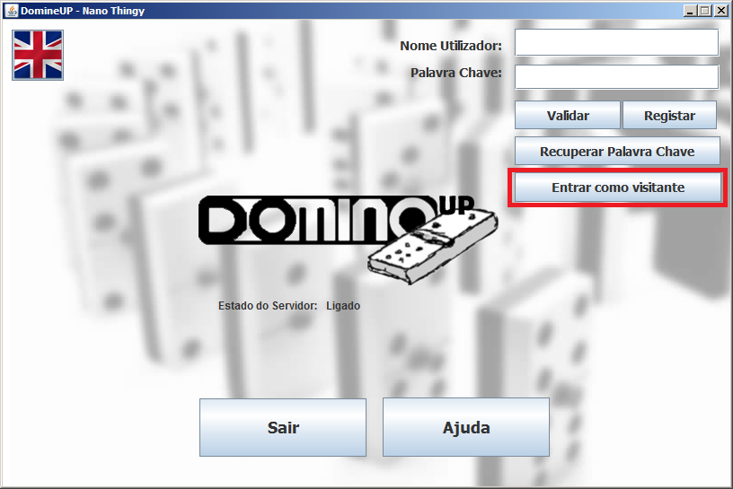
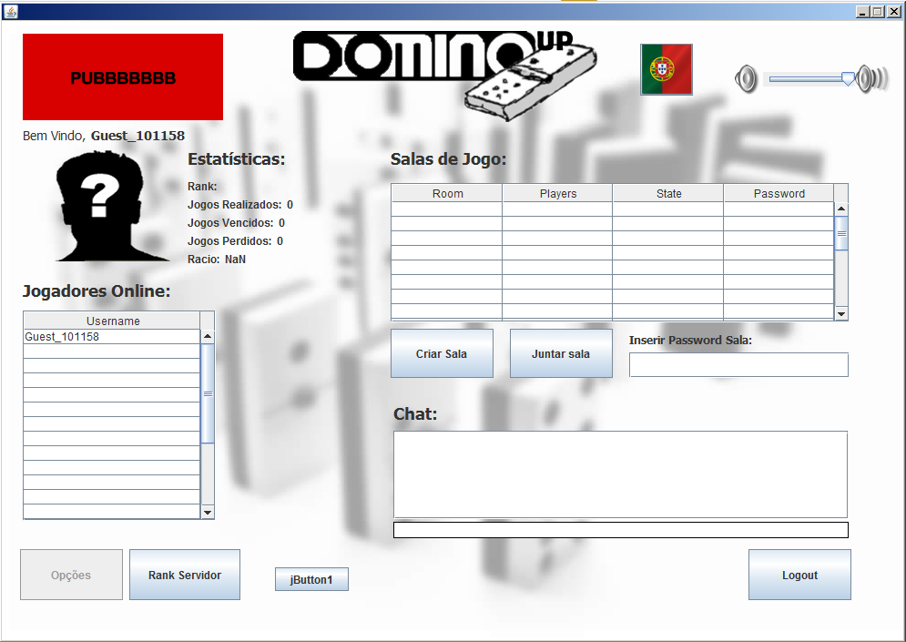

De modo a entrar como visitante na aplicação, o utilizador deve premir o botão "Entrar como visitante", conforme a seguinte imagem:

Assim que o botão é premido, o utilizador é transferido para a interface "Welcome Screen" e é lhe atribuido automaticamente um nome do tipo "Guest_******":

Para repôr o idioma original, basta premir o mesmo botão novamente.